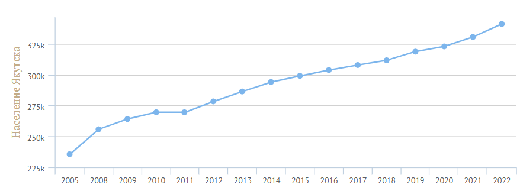

-
<
- Население Якутска на 1 января 2022 года составляет 330615 человек.
- На 1 января 2021 года по численности населения город находился на 59-м месте из 1116 городов Российской Федерации.
- Якутск — многонациональный город. Большинство составляют якуты (саха) — 141 тыс. чел. и русские — 113 тыс. чел. Также проживают эвенки, эвены и другие.